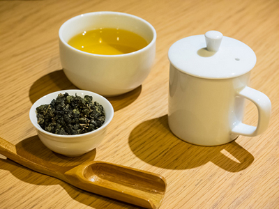

如何泡一壺好茶必須掌握水質、水溫、茶葉量即沖泡時間等四大要訣，
因此，下列簡單歸納出幾個識別不同的茶葉、個別的沖泡要點。
先以熱水溫壺杯，倒出後將茶壺底部鋪滿一層茶葉，
沖入約95-100度滾沸熱水；依照茶葉形狀與個人喜好調整泡茶時間。
飲用前先欣賞葉形舒展，聞茶香再品茶湯，感受香氣、滋味、喉韻、後韻等台灣茶多層次表現。
第1次沖泡時間約60至90秒；第2次約減少15秒，第3次起可逐漸遞增15秒，約可回沖5次。
剛滾沸的熱水有助於球形茶的葉形舒展，是讓茶葉香氣溢散奔放的重點。
建議熱水溫度調整為85-90度熱水，第1次沖泡約40至60秒；
第2次約40秒，第3次約60到90秒，約可回沖3次。
立體茶包:
杯內置入一只約3公克茶包，沖入300ml熱開水，浸泡約5-8分鐘。
每100ml常溫開水投入1公克茶葉，每個茶包可沖泡300ml，投入後靜置冰箱8-12小時即可享用冰飲茶。
用常溫水沖泡，較不易釋出苦澀味等成分，僅帶出甜味，然而香氣卻也較熱泡不明顯。